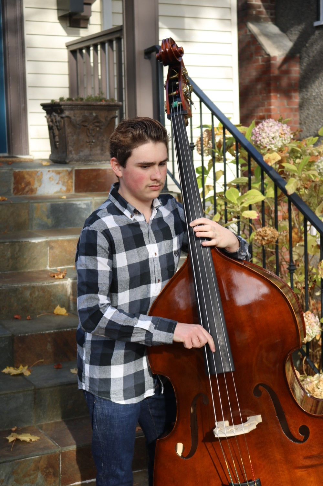

Welcome to my double bass website! If you need to find anything look at the sidebar. A lot of videos are featured for instructional purposes to better explain and show the techniques. Here is a video of me playing double bass.

